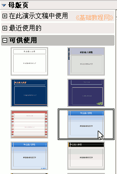

OpenOffice.org 教程之 Impress 演示文稿
作者：TeliuTe 来源：基础教程网
十、版式设计 返回目录幻灯片的设计包括模版和版式，从而使幻灯片形成独特的风格，包括颜色、字体、字号等等，下面我们来看一个练习；
1、打开文件
1）启动Impress，创建一个空白文档 ；
2）点菜单“文件－打开”命令，打开上次第8课的“幻灯片切换”；
3）点“文件－另存为”命令，以“版式设计”为文件名，保存文件到自己的文件夹；
2、选择模版
1）在右边母版页窗格中找到蓝色的“Blue”模版，点击选中，可以发现左边窗格中所有的幻灯片上都添加了这种效果；

2）保存一下，放映一下文件，看一下各个幻灯片的效果，可以发现在每张幻灯片上都添加上了效果；
这种方法可以让我们快速给所有幻灯片都添加上统一的样式；
4）如何单独添加一个样式呢？选择第二张幻灯片，在右边窗格找到棕色“human”模版，
瞄准点击鼠标右键，在出来的菜单中选择“应用于选定幻灯片”；
这样第二张幻灯片的样式就是human模版的了；
3、幻灯片版式
1）版式主要指幻灯片中内容的布局，一般有横排、纵排那样；
2）在最后一张幻灯片上敲右键，选择“新建幻灯片”命令，新增一个空白幻灯片；
3）在右边的窗格下边点“版式”折叠按钮，展开版式窗格；
4）选择第三个“标题，文字”版式，然后幻灯片中自动出现了两个文本框，一个是标题一个是文本；
5）在“单击插入标题”文字上点一下，输入文字“目录”，
再在下面的“单击新增大纲”文字上点一下，输入“第一张对角正方形↙第二张菱形↙第三张棋盘↙第四张出现↙第五张螺旋飞入”（↙表示按一下回车键）”；
版式自动会跟模版结合起来，保存一下文件，放映一下，看一下幻灯片的效果有什么变化；
选中文字后点菜单“插入－超链接”命令，可以在中间的链接目标中，设置到各个页面的超级链接；
本节学习了Impress中设置幻灯片版式的基本操作，如果你成功地完成了练习，请继续学习；
本教程由86团学校TeliuTe制作|著作权所有
基础教程网：http://teliute.org
美丽的校园……
转载和引用本站内容，请保留版权信息和本站链接。